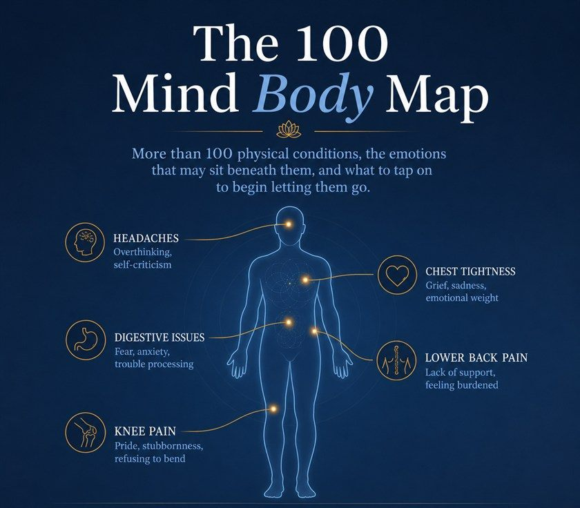

Made by Michael Hetherington
EFT practitioner and trainer. I built this for my own clients, drawing on Louise Hay, Caroline Myss and Dr David Hawkins, then realised it was too useful to keep to myself.
Look up your symptom. See the emotion that may be sitting underneath it, and what to tap on to start letting it go.
Free. Instant download. Unsubscribe anytime.

Each page pairs a physical symptom with the emotional pattern that often sits beneath it. A few examples:
| Symptom | May be holding |
|---|---|
| Headaches | Overthinking, self-criticism |
| Chest tightness | Grief, sadness, emotional weight |
| Digestive issues | Fear, anxiety, trouble processing |
| Lower back pain | Lack of support, feeling burdened |
| Knee pain | Pride, refusing to bend |
Plus 110 more, each with what to focus on and tap on.
EFT practitioner and trainer. I built this for my own clients, drawing on Louise Hay, Caroline Myss and Dr David Hawkins, then realised it was too useful to keep to myself.